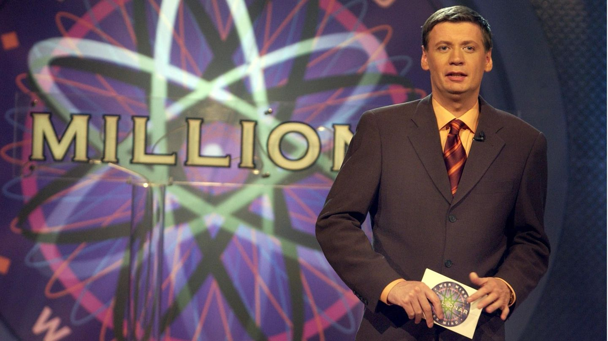
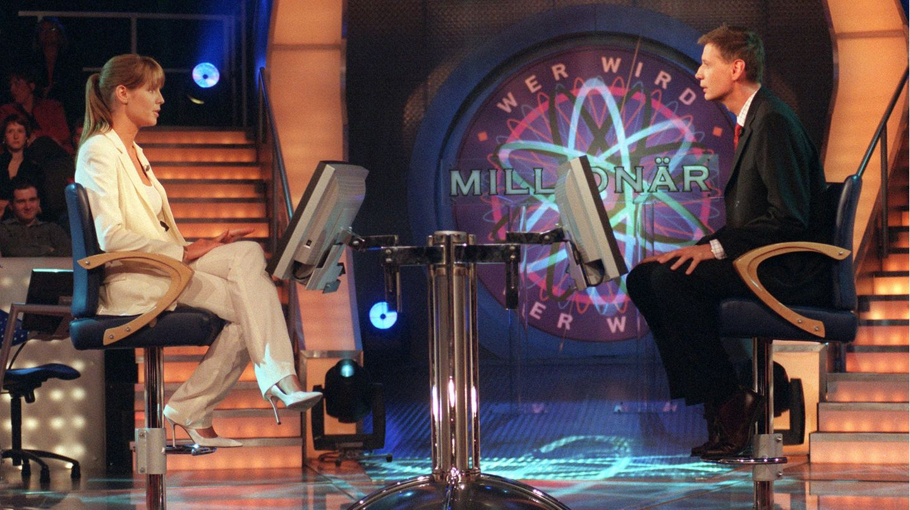
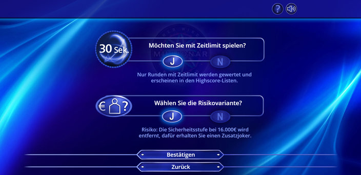

Die Geschichte

"Wer wird Millionär?" ist eine der bekanntesten Quizshows der Welt und begeistert seit Jahrzehnten ein Millionenpublikum. Die Idee stammt ursprünglich aus Großbritannien, wo die Show am 4. September 1998 unter dem Namen "Who Wants to Be a Millionaire?" beim Sender ITV erschien. Entwickelt wurde sie von den Produzenten David Briggs, Mike Whitehill und Steven Knight, die ein spannendes Konzept erschufen, das weltweit erfolgreich wurde.

Das Grundprinzip der Show ist, dass Kandidaten 15 Multiple-Choice-Fragen beantworten müssen, die mit jeder Stufe schwieriger werden. Der Hauptpreis ist eine außergewöhnlich hohe Summe – in Großbritannien waren es anfangs 1 Million Pfund, was damals für eine Quizshow sensationell war. Die Kandidaten haben vier Joker zur Verfügung, um sich helfen zu lassen: den 50:50-Joker, der zwei falsche Antworten entfernt, den Publikumsjoker, den Telefonjoker, bei dem jemand angerufen werden kann und den Zusatzjoker, bei dem eine Person aus dem Publikum befragt werden kann. Wenn man die Risikovariante vor dem Spiel annimmt, erhält man den Zusatzjoker. Es ist jedoch wichtig zu beachten, dass diese Entscheidung endgültig ist – einmal gewählt, kann sie nach Spielbeginn nicht mehr geändert werden.
Der Erfolg in Großbritannien führte dazu, dass das Format in über 100 Ländern lizenziert und angepasst wurde. In Deutschland startete die Show am 3. September 1999 auf RTL unter dem Titel "Wer wird Millionär?", moderiert von Günther Jauch, der bis heute das Gesicht der Sendung ist. Jauch begeistert die Zuschauer mit seinem charmanten und humorvollen Moderationsstil, der die Show zu einem festen Bestandteil der deutschen Fernsehlandschaft gemacht hat.

Die deutsche Version unterscheidet sich in einigen Punkten von der britischen Version. So gibt es in Deutschland eine Risikovariante, bei der Kandidaten selbst entscheiden können, ob sie eine zusätzliche Sicherheitsstufe nutzen möchten. Regelmäßig finden auch Prominentenspecials statt, bei denen Stars für wohltätige Zwecke spielen.

Seit ihrer Einführung hat "Wer wird Millionär?" zahlreiche spannende Momente und Gewinner hervorgebracht. In Deutschland erreichten bisher mehrere Kandidaten die Million. Die Show hat auch weltweit für Aufsehen gesorgt, etwa durch den Oscar-prämierten Film "Slumdog Millionaire" (2008), der die Geschichte eines jungen Mannes erzählt, der bei der indischen Version der Show eine Million gewinnt.
"Wer wird Millionär?" bleibt bis heute ein Publikumsliebling. Die Mischung aus Wissen, Strategie und Nervenkitzel sowie der sympathische Umgang des Moderators mit den Kandidaten machen die Show zu einem echten Klassiker, der auch nach über 20 Jahren faszinierend ist.